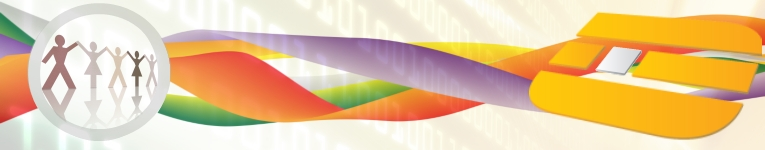
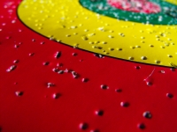

|  |  | Azienda | Chi siamo
Digitalia Sistemi S.r.l. nasce nel 2007 come azienda di consulenza e sviluppo software orientata ai processi. Grazie all'esperienza maturata dai soci fondatori in venti anni di attività nel mondo dell’Information Technology, e al pool di specialisti che collaborano con l’Azienda, essa è in grado di offrire ai propri Clienti le competenze professionali e tecnologiche per portare a compimento progetti mission-critical ad alto contenuto tecnologico caratterizzandosi per impegno, affidabilità, know-how e cura del Cliente.
Vision
Lo scenario IT è divenuto negli anni, sempre più articolato, integrato, globalizzato e complesso.
Ciò richiede una preparazione sempre crescente ed implica, necessariamente, un approccio metodologico ai problemi che sia al tempo stesso flessibile e rigoroso, nonchè una visione chiara e pragmatica delle possibili soluzioni.
Mission
La nostra Missione aziendale è quella di fornire servizi e soluzioni ad elevato valore aggiunto, capaci di incrementare la produttività ed ottimizzare gli investimenti, permettendo così ai nostri Clienti di focalizzarsi sugli aspetti “core” del proprio business.
La qualità del servizio offerto è garantita dalle metodologie applicate e dall’elevata professionalità delle risorse impiegate.
L’autonomia nelle scelte, l’aggiornamento costante e la continua ricerca ci permettono di proporre soluzioni innovative ed adeguate alle aspettative del Cliente.
La nostra azienda si pone quindi come punto di riferimento tecnologico per ogni nostro Cliente in un continuo lavoro di squadra, perchè i suoi obiettivi e la sua soddisfazione sono i nostri obiettivi e la nostra soddisfazione.
|
|
|